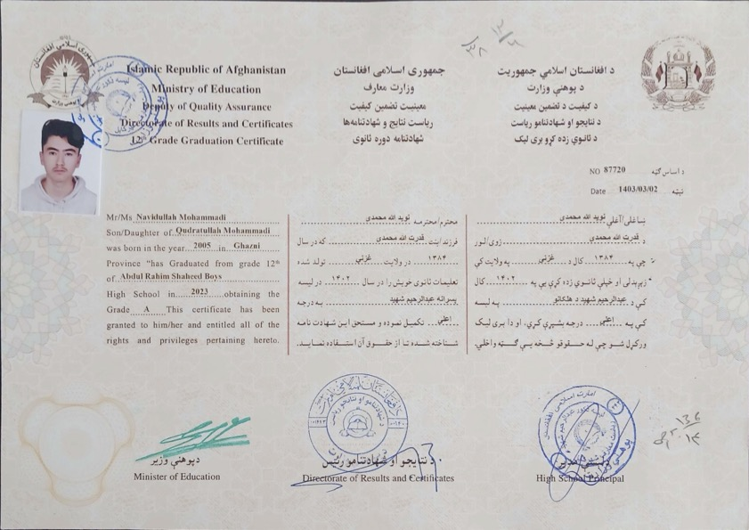
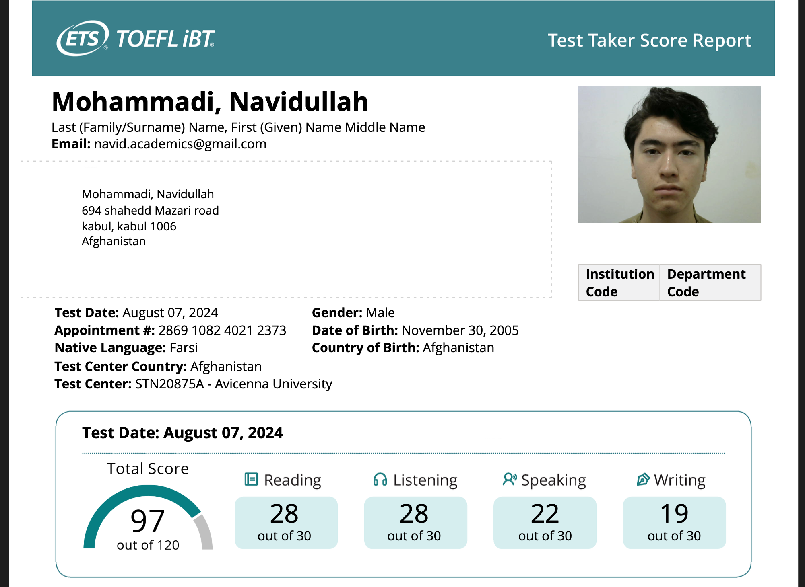
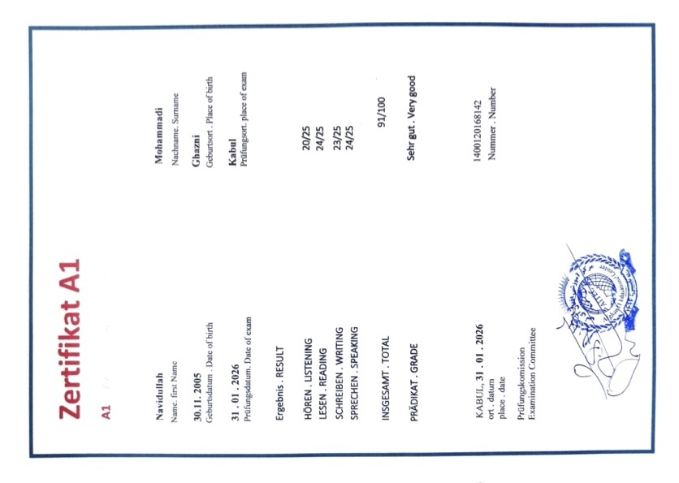
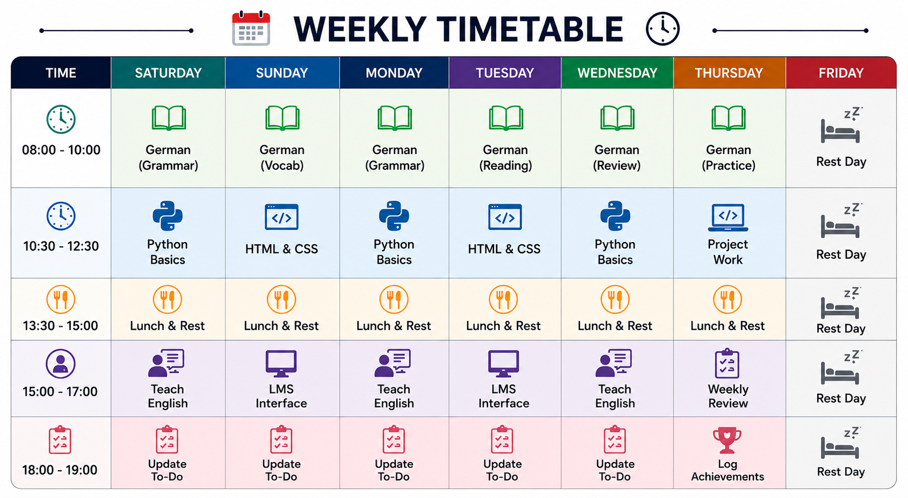

About Me
I am an aspiring Computer Science student with a deep passion for software development and self-directed learning. Driven by a desire to build practical digital solutions, I developed this Learning Management System interface to sharpen my front-end engineering skills in HTML5, CSS3, and JavaScript before beginning my Bachelor of Science degree. I enjoy breaking down complex administrative workflows into clean, user-friendly visual interfaces and am constantly exploring new ways to connect structural design with efficient problem-solving.
Centralizing My Daily Workflow
The primary purpose of this interface is to serve as a personal command center for my daily studies. I designed the timetable and task management sections to keep my self-directed learning organized and on track. By digitizing my daily to-do lists and study schedules, I can efficiently manage my time and balance my programming practice with my ongoing German language courses and university preparation.
My Learning Goals
As a recent high school graduate preparing to study Computer Science, my main goal right now is to build a strong beginner's foundation. I want to get more comfortable with writing Python code and designing simple websites so that when I officially start my university classes, I already understand the basics of how software works. At the same time, my biggest daily focus is improving my German language skills. Reaching the fluency I need for my studies in Germany is a big challenge, so my goal is to practice and learn a little bit more every single day.
Achievements



Graduating from Abdul Rahim Shaheed High School in 2023 with a GPA of 96.53% was the foundational step in my academic journey. This achievement represents years of consistent ard work and a strong commitment to my education, particularly in building a solid base in science and mathematics. It serves as a visual reminder of where my journey began and motivates me to maintain that exact same level of academic excellence as I transition into university-level Computer Science.
Achieving a score of 97 on the TOEFL iBT in 2024 was a major personal and academic milestone. This certificate proves my ability to independently master complex subjects and effectively communicate in an international academic environment. Reaching an advanced English level has not only allowed me to confidently access global programming resources and self-teach technical skills, but it also fully prepares me for the international tech community I will be joining in Germany.
Earning my German A2 certification represents my ongoing dedication to integrating into the German educational system. Because mastering the language is the most critical step before beginning my preparatory year, this certificate stands as proof of my daily discipline and steady progress. It marks my transition from a complete beginner to someone who can navigate foundational communication, serving as the perfect stepping stone toward the advanced fluency required for my future university studies.
Timetable:
This calendar is the core of my daily routine. Since I am managing my own education right now, I use this timetable to give my days a clear structure. It helps me block out specific hours for my most important tasks, like practicing my German vocabulary in the mornings and working on my coding projects in the afternoons. Having a visual schedule keeps me disciplined and ensures I am dedicating enough time to both my language goals and my computer science preparation every single week.

Contact :
If you would like to get in touch, feel free to reach out!
- Email: navid.academics@gmail.com
- Phone Number : +93 77 961 8497